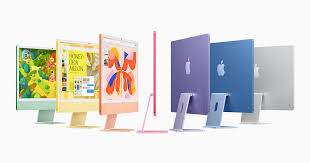

📱 iPhone
L'iPhone è una linea di smartphone prodotti da Apple e basati sul sistema operativo iOS. È stato introdotto per la prima volta da Steve Jobs nel 2007 e si distingue per la sua interfaccia utente tattile, l'integrazione tra hardware e software, un ecosistema di app e un focus su sicurezza e privacy. Ha prestazioni AI avanzate, super Retina XDR, 120Hz, fotocamera 48MP con zoom ottico 2x e video 4K, batteria migliorata con ricarica USB-C e design in alluminio e vetro colorato a partire da 1300 euro.
📘 iPad
L'iPad è una famiglia di tablet commercializzati da Apple a partire dal 27 gennaio 2010. Ne esistono vari modelli,suddivisi in diverse generazioni, è un tablet versatile, ideale per la produttività , la creatività e l'intrattenimento. Disponibile in diverse versione. L’ultimo iPad (11ª generazione, 2025) è un tablet versatile con schermo Liquid Retina da 11", chip A16 Bionic, fotocamere da 12 MP (fronte e retro), supporto Apple Pencil 1ª gen, porta USB-C e design sottile in alluminio. Disponibile in vari colori, offre buone prestazioni per studio, svago e lavoro leggero, con iPadOS 18 e connettività Wi-Fi 6, a apartire da 1200 euro.
📘 Mac
Un "Mac" o "Macintosh" si riferisce a una famiglia di computer prodotta da Apple Inc., che utilizza il sistema operativo macOS. Questa famiglia include diversi tipi di computer, sia portatili (come i MacBook Air e MacBook Pro) che fissi (come iMac, Mac mini, Mac Studio e Mac Pro). Il nuovo MacBook Pro 2025 è il portatile più potente di Apple, con chip M4 Pro o M4 Max, display Liquid Retina XDR da 14" o 16", batteria fino a 22 ore, corpo in alluminio riciclato e sistema operativo macOS 15. Offre prestazioni eccezionali per creativi e professionisti, con Wi-Fi 7, porte Thunderbolt 4, HDMI, MagSafe e supporto per fino a quattro monitor esterni. Disponibile in grigio siderale e argento a apartire da 1200 euro.

📘 Apple Watch
L'Apple Watch è uno smartwatch prodotto da Apple che va oltre la semplice funzione di orologio, agendo come un'estensione dell'iPhone e un dispositivo per la salute e il fitness. Offre funzionalità per monitorare l'attività fisica, controllare le notifiche, effettuare pagamenti, ascoltare musica e rimanere in contatto con altre persone, con modelli e funzioni che variano a seconda delle esigenze, da quelle di base a quelle per sport estremi, a partire da 200 euro.

© MIRIANA GUIDA